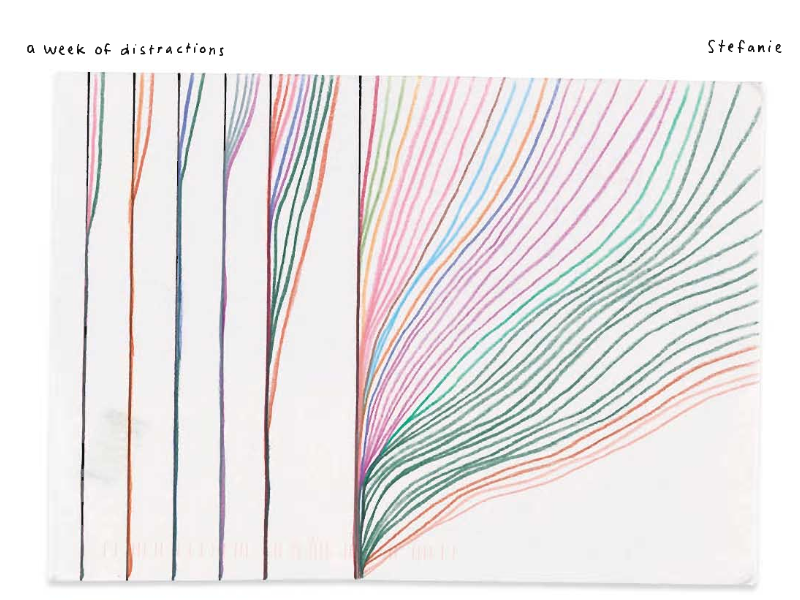
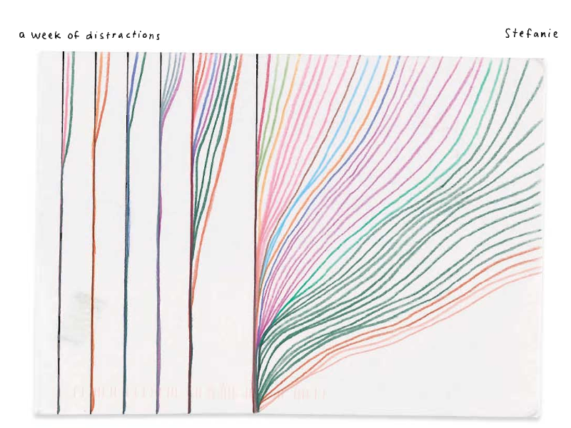
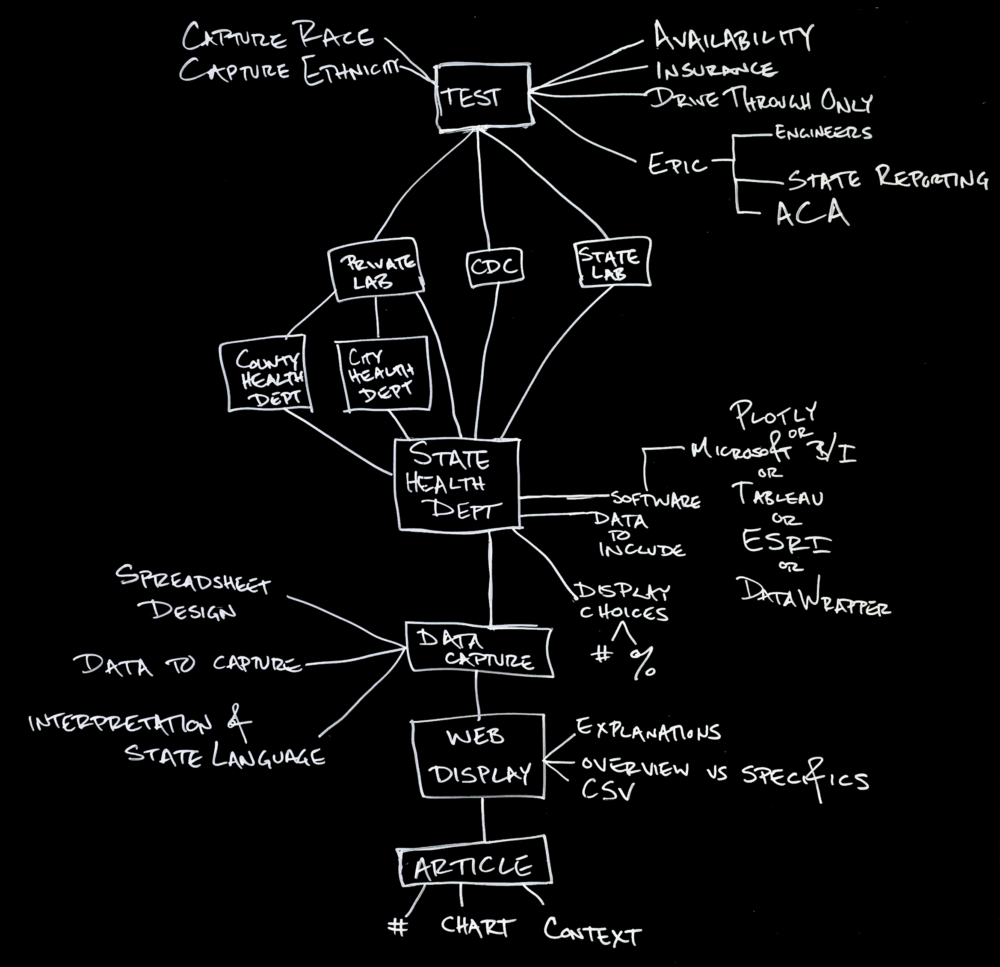
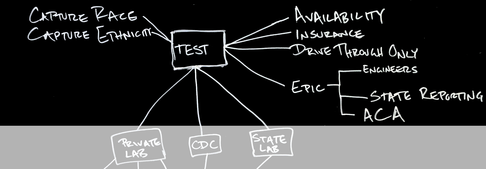
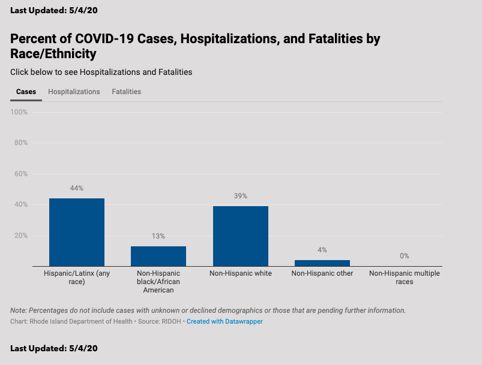
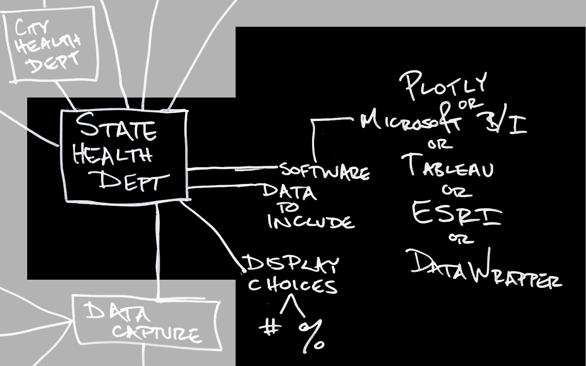
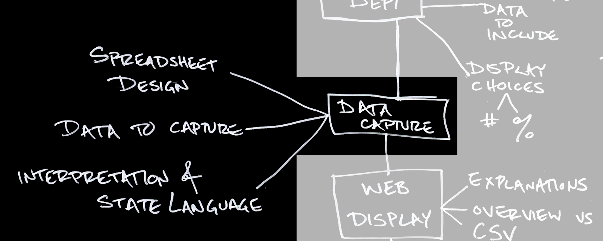

‘There are currently 166,883 cases in NYC, with nearly 18,500 deaths confirmed from or probably caused by COVID-19,’ writes Jen Chung in an early May article in Gothamist. That day’s update was largely about Mayor de Blasio’s statements on how well people were doing at social distancing during a weekend of pleasant weather.
I know that so much is encapsulated in that number, 166,883. In its precision, 166,883 rather than ‘nearly 167,000,’ Chung perhaps conveys more accuracy. I want to think about all the people who worked to get that number from clinics and hospitals across New York to my computer screen. This number represents 166,883 people, too many for any stadium in the world. Its concision comes with a too-neat collapsing of layers and layers of decisions, and work, and messiness. I am interested in showing that messiness, and explaining why I think it is important to have the messiness be seen.
I want to understand what is happening with the spread and effects of COVID-19 outside my circumscribed space. From the first reports I read about positive cases, I had questions about the numbers reported, not about their validity but about their context. Here, I am focused on how people collect and present the data which may help someone to understand our current health crisis. However, I want to consider how we could be more aware of the people who worked to get me that statistic, and the choices they made along the way. While my interest is in preserving and displaying messiness, my hope is to do so with clarity; this is not a metaproject. I want to figure out how to make both the unmitigated messiness and the work of many people visible alongside the number’s value. I begin by looking at how others are thinking about presenting uncertainty and human involvement, in data visualization and data science, and what I would like to build upon from these precedents. I then explain what type of approach I’m striving for, to make the context and work of data visible. I detail an example of what that context includes for data about COVID-19 cases in the United States. I do not have a best practice to suggest at the end, but I hope to encourage thinking about all of the guardians of the data along the way.
Within data visualization, thoughtful practitioners and theorists are interested in how to show uncertainty or humanity. Many of the examples I found for displaying uncertainty were in situations where the uncertainty is in the future, and the visualization is showing a prediction. Hurricanes and elections are two high-consequence examples when journalists and scientists want to convey what is coming. With both, the people creating a visualization need to balance the statistical understanding of those who will look at their image, relay useful information, and consider the weight of something which looks sciency. Writing about ways to visualize uncertainty, Aaron Hill, Clare Churchouse, and Michael F. Schober write that “[t]he defaults in most graphing software nudge us toward perfect looking points, lines, and areas.”
 

Another type of visualization practice which makes clear the creator behind any work is using hand-drawn, rather than computer generated, visuals. These projects are personal and professional, from the maps which readers sent to CityLab ‘of their worlds in the time of coronavirus’ or Stefanie Posavec and Giorgia Lupi’s yearlong project to document and share data about their own lives. One of the key parts of these more humanistic projects is that data, or what can be displayed on a map, is determined by the person creating it, not by what is available as already quantified. For Dear Data, Posavec and Lupi’s project, they included all the distractions one week and all the apologies another. Neither of these could be captured by a fitbit, and finding a way to put them into an excel spreadsheet would require a whole set of decisions about how to categorize and what to include.
From these data visualization precedents, I want to consider how we capture and display the information we have and the information we are lacking. I also want to make the creators of the dataset apparent.
A part of what I’m interested in is how information is presented and what care we need to take in presenting and interpreting it. Although I am not focused primarily on graphical representations of the health impacts of COVID-19, I am interested in a similar problem, namely how to convey quantitative information without impassive authority. Johanna Drucker writes that “[t]he graphical force conceals what the statistician knows very well — that no ‘data’ pre-exist their parameterization. Data are capta, taken not given, constructed as an interpretation of the phenomenal world, not inherent in it.”
The seventh principle of Catherine D'Ignazio and Lauren Klein’s Data Feminism is ‘Make Labor Visible.’ For them, this is about understanding who is behind the data set or the digitized collection. They write that “[i]n our capitalist society, we tend to value work that we can see.” Understanding that all of this is made by people is both about acknowledgment and responsibility. “The emphasis on giving formal credit for a broad range of work derives from feminist practices of citation,” write D’Ignazio and Klein. At the same time, thinking about a black boxed algorithm as being developed by people will help us to understand why it is set up as it is, and to treat it as something which we can question.
I admire the work of visual journalists and designers, whose deft use of words and pictures allows for conveying narrative in a way which would not be possible in text alone, nor in a generated chart. However, what I want to consider are the times when having something quantified is important, but that quantification is happening with context. I want to be able to show the number of COVID-19 cases in NYC, but have that number come with a way to view a chain of custody and decisions. Rather than citing the organization which provides a figure, be it the CDC or a health department, I want all of the people who have touched this number to be understood, and all of the choices they made along the way to be included.
I live in New York. Both of my parents grew up in New York, my pre-boomer father moving to Levittown with his parents after the war. My mother grew up on a farm 400 miles away from him, in the state’s furthest county west, an area which shares more with Ohio and Ontario than with New York City or the burgeoning suburbs of Long Island. All these versions - Harlem apartment, duplicated houses on Long Island, nineteenth century farmhouse - are in New York, and yet the difference in these experiences is lost by knowing only the state of residence. I want for these different experiences to be carried or understood, not hidden in the aggregate category, New York. As statistics, we would be combined, while our lived existence is so different.
As I write this, it has been four months since the first cases of COVID-19, and we are two months into a global pandemic. I have been helping with a project to “collect data on COVID-19 testing and patient outcomes,” an ecosystem of shared spreadsheets and volunteers standing in for what the CDC should be doing to provide a comprehensive assessment of what someone knows about testing, cases, and fatalities. We are now trying to collect and share information about the race and ethnicity of people with, or who have died from, COVID-19. While not a feasible practice for every statistic, I want to consider what it would take to determine the relative likelihood of someone Black dying of the coronavirus.
To start at the beginning of the data creation and collection, in order to be counted toward the number of cases, someone needs to be tested. A person’s ability to get tested is a mix of geography, physical condition, and societal privilege. While much of this information is over a month old, The Markup has been collecting state’s official testing thresholds. After meeting the stated, and changing, requirements, someone may need to be able to find a testing location. Drive-through testing is only available to people with a vehicle. In order to understand how this virus is affecting different people, we need to have similar testing rates.
When performing a test, the health care worker will collect physical material on a swab to be tested. They will also collect information about the person being tested. What information is collected may be based on whether someone is being tested as an outpatient or having been admitted to an emergency room. The information in the hospital’s records will depend on what the patient answers, and the questions depend on the electronic health record software. Years before and far away, engineers and project managers chose what field options to include under ‘Race,’ and whether to require a single answer or allow someone to select several checkboxes. The categories they include may be based on the decisions at the Census. The information they collect may have changed because of language someone made sure to include in the ACA.
After someone is tested, the clinic or hospital may or may not report the test to the state. Someone at the clinic will send the sample to a lab, either to the CDC, to a state lab, or to a private company such as Quest Diagnostics or Labcorp. Someone at the lab will process the sample and report their results to the clinic, or the patient, and may, or may not, report the outcome to the state.
At the state public health department, someone decided how to collect information from the lab tests and coroner’s reports. Someone is deciding about all the headers on a spreadsheet and each choice in how the data are categorized, which will affect how others can present and understand that data later.
Every day, many of us spend hours looking at donut charts, bar graphs, and pie charts over maps. Someone at each state’s department of health or governor’s office had to create a dashboard, decide what information to include, and how to include it. There were not months for meetings about what should be part of https://coronavirus.delaware.gov. What is included is a mix of what someone at the state knows, what someone at the state deems important, and what someone at the state is able to show. As the person looking at these dashboards, I don’t know if the cases in Georgia are reported by county because the state is getting reports from county health commissioners, or because it is something important to understanding the situation. We were looking at data hosted by the Fire Command of Sonoma County, California, I think because that was the office who needed to have publicly accessible maps on a website before and so was equipped to do so again. Someone in Massachusetts uploads a daily PDF, the governor in New York holds a daily press conference.
Besides the presentation style, someone at each state decides what to share. The same information might be presented in one of several ways. Most states provide some version of the number of tests, number of cases, and number of fatalities. Most states update daily, though maybe not on the weekend. Missouri reports the number of people tested, Michigan reports the total number of tests performed (and one person may get several tests). Louisiana reports deaths and probable deaths separately, as does Maryland, though what is considered probable is different. In order to compare what is happening in one state to another, we are trying to capture the data from states in a somewhat consistent way, but every choice about what heading to put on a column of data is a decision, with assumptions about the state reports. Currently, Nevada does not share any information about race or ethnicity of people who are sick with or have died from COVID-19. Therefore, if I’m compiling what we do know about fatalities, I don’t have any idea about what is happening on the tribal lands which intersect what is currently Nevada. Any national conclusion will be incomplete. Rhode Island reports the race of people who have tested positive, but do not tell us how many people they have this information for. Therefore, when they report that 44% of positive cases are for people who are Hispanic or Latinx, that might be 44% of the 10,205 positive cases currently in Rhode Island, but it is probably 44% some smaller number.
the pie chart on the right shows 44% of something less than the total
the pie chart on the bottom shows 44% of something less than the total
Texas is reporting race data for a third of their cases and fatalities, and I have no way to know if that is a representative third, so that I’d be able to compare the prevalence of Hispanic deaths to the overall Texas population. New York City provides more information than New York State shares for the city, but we are currently choosing to standardize and only draw from state sources. In Drucker’s framing, “[b]y recognizing the always interpreted character of data we have shifted from data to capta, acknowledging the constructed-ness of the categories according to the uses and expectations for which they are put in service.”
Each state is a special case. Some report Asian and Pacific Islander as a single category, most do not. Some states include Hispanic with race, others have a separate set of information about ethnicity. Michigan reports two options for ethnicity: Hispanic / Non-Hispanic and Arab / Non-Arab. Hawai‘i reports the race for people with COVID-19 as percentages, and they add to 114%. Some states tell us what groups are included in the ‘Other’ category on their chart, some do not. For the states which do report on the race of people who have died, the only two categories they all use are Black and white. Because of these many considerations, I am very aware that anything I assemble as a national number is egregiously incomplete.
Because of how coronavirus is, or might be, spread, I am much more aware of the physical things I touch, and who may have touched them before me. Playgrounds are closed, because one person doesn’t know whose small hands, or mouth, were last on that equipment, and it is now quite important to know. Similarly, any time we pick up a number somewhere, we need to know who has handled it before us, and what they did with it. I hope that by thinking about who has been there before, we will also think about who will come after, and be careful to explain what we’ve done along the way. I would love for any value I see in a table to come with metadata about where it has been, like the authentication papers for art. I wish I could check whose work came before, to acknowledge the accretion of choices someone made. I want to be able to use the numbers which are available, while understanding what is missing from them. In many cases, the values are as much an artifact of the collection system as of the condition being measured, and I want to keep that possibility visible. I don’t think that the hand-drawn chart and narrative explanation I provided can accompany every number you read, but I do hope to find other ways to acknowledge the complex context of those numbers.